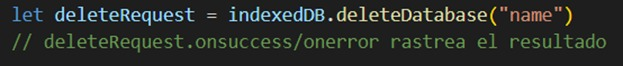
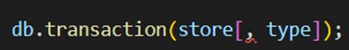
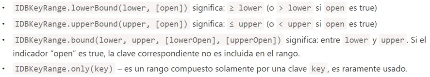
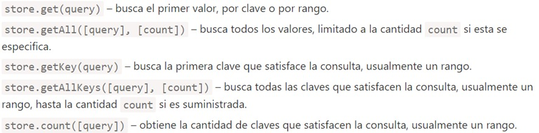
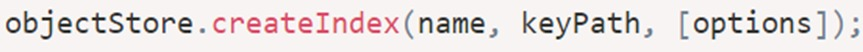

¿Qué es IndexedDB en JavaScript?
IndexedDB es una manera de almacenar datos dentro del navegador del usuario. Debido a que permite la creación de aplicaciones con habilidades de consulta enriquecidas, con independencia de la disponibilidad de la red, sus aplicaciones pueden trabajar tanto en línea como fuera de línea.
Toda esta potencia es normalmente excesiva para las aplicaciones cliente-servidor tradicionales. IndexedDB está previsto para aplicaciones fuera de línea, para ser combinado con ServiceWorkers y otras tecnologías.
IndexedDB no es más que un sistema de base de datos transaccionales que sirve para guardar la información estructurada en el propio navegador. Es ideal para almacenar abundantes cantidades de datos, como por ejemplo catálogos de productos, que requieren también de una búsqueda rápida de la información que hay en ellos. Además, IndexedDB, para ser usado con Progressive Web Apps, cuenta con la característica de ser asíncrono, por lo que no dificulta el acceso a la información mediante JavaScript.
En una aplicación progresiva, guardaríamos en la Cache Storage esa información, pero podría resultar complicado en circunstancias como un CRUD (Create, Read, Update, Remove). En este caso, echaríamos mano de IndexedDB.
Beneficios de IndexedDB
IndexedDB es una base de datos que está construida en el navegador y que es mucho mas potente que la herramienta LocalStorage, algunos puntos a favor de este son:
- Almacenamiento de casi todo tipo de valores.
- Soporte en transacciones para confiabilidad
- Soporta consultas de rango por claves e índices
- Capaz de almacenar mayor volumen de datos que LocalStorage
Para crear o que nuestra aplicación cree una base de datos con este método se debe de seguir una serie de pasos, los principales son:
Imagen que contiene el esquema de IndexedDBPaso 1: conectar o abrir base de datos
Para eso utilizaremos la sintaxis que muestra la imagen, Donde “name” es el nombre de la base de datos y “versión” un entero positivo, predeterminado en 1.
Ver imagen del lado para sintaxisPaso 2: Manejo de los errores y enventos de la base de datos
La llamada a la base de datos devuelve un objeto de tipo openRequest, y puede tener diversos tipos de eventos:
- OnSucces
- OnError
- OnUpgradeneeded
En caso de que él se realice una actualización a la aplicación el segundo parámetro se convertiría en 2, y el funcionamiento requerido para verificar o actualizar en el lado del usuario seria (Ver segunda imagen):
Para borrar una base de datosPara borrar una base de datos IndexedDB es necesario seguir la sintaxis de la siguiente imagen:

Paso 3: Almacenamiento de objetos (Object Storage).
Para almacenar algo en una base de datos de IndexedDB necesitamos un “almacén de objetos”, o lo que sería su equivalente en otras bases de datos “tablas” o “colecciones”.
Debe existir una “key” única para cada valor del almacén.
La sintaxis para crear un almacén de objetos es:
- Name: es el nombre del almacén
- keyOptions: objeto opcional con una de estas dos claves:
- keyPaht: ruta a una propiedad del objeto que IndexedDB usará como clave
- sautoIncrement: si es True, la clave para el objeto nuevo que se ingrese se generara automáticamente con un numero auto incrementable.
Paso 4: Realizar trasacción.
Este es un término genérico que se utiliza en muchas bases de datos, hace referencia a un conjunto de operaciones que deben operarse en simultaneo y, o bien todas dar un resultado exitoso o todas fallar, por ejemplo, cuando una persona compra algo:
- Resta dinero de su cuenta personal
- Agrega un item a su inventario
no es conveniente que la primera acción se realice con éxito y la segunda no, o viceversa, ambas deberían ser exitosas o ambas fallar.
Para iniciar transaccion
- Store: es el nombre del almacén donde la transacción va a acceder
- Type: tipo de transacción puede ser:
- Readonly: solo se puede leer
- Readwrite: puede leer o escribir datos
Finalmente quedan las busquedas
Hay dos formas principales de hacer búsquedas dentro de un almacén de objetos Por clave o rango de claves: son objetos de tipo IDBkeyRange, que especifica un rango de claves aceptables:
Existen también los métodos que aceptan un argumento “query” que puede ser una clave exacta o un rango de claves:
Campo del objeto.
Para poder buscar por otro campo del objeto necesitamos crear una estructura de datos adicional: llamada Índice “index”. El index es un agregado del almacén que rastrea un campo determinado del objeto dado, su sintaxis es:
- Name: nombre del índice
- KeyPaht: ruta al campo del objeto que el índice debe seguir
- Option: un objeto opcional con las propiedades:
- Unique: si es True un valor no podrá repetirse en el índice.
- multiEntry: solo se usa si el valor en KeyPaht es un array.